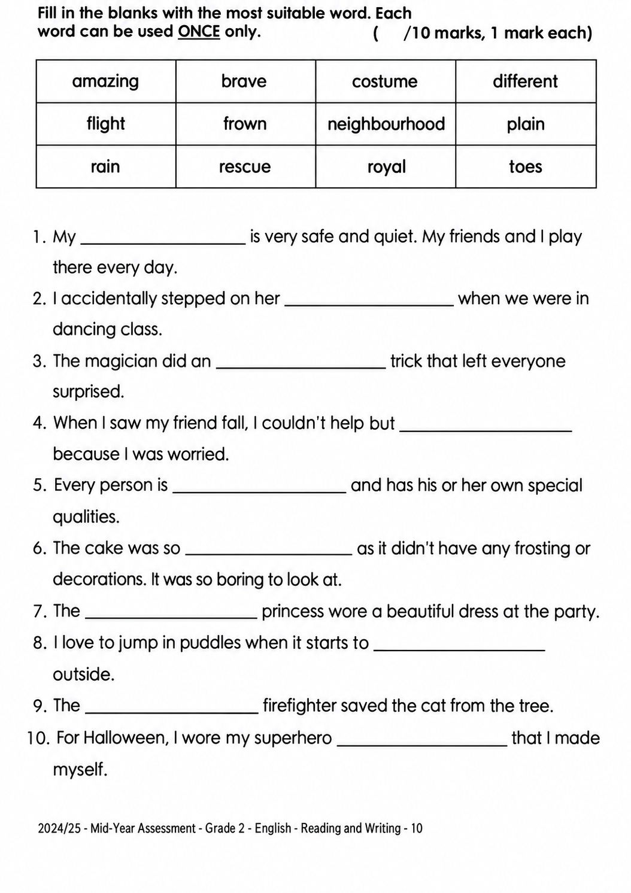

已掌握
| # | 中文意思 | 例句/提示 | 英文默写 | 已掌握 |
|---|---|---|---|---|
| noun 名词 | ||||
| 1 | 奶油 | I like on my cake. | ||
| 2 | 大厅 | We meet in the school . | ||
| 3 | 市场 | There is a near my home. | ||
| 4 | 模型 | I build a car . | ||
| 5 | 尾巴 | The dog wags its . | ||
| 6 | 音乐剧 | We watched a at school. | ||
| 7 | 肉类 | I eat for dinner. | ||
| 8 | 科学 | We learn about plants in class. | ||
| verb 动词 | ||||
| 9 | 洗澡 | I before bed. | ||
| phrase 短语 | ||||
| 10 | 摆餐具 | I before dinner. | ||
| 11 | 照顾 | I my little sister. | ||
| 12 | 等一下 | , please. | ||
| 13 | 平安夜 | We decorate the tree on . | ||
| noun phrase 名词短语 | ||||
| 14 | 礼堂 | We sing together in the . | ||
| adjective 形容词 | ||||
| 15 | 流行的 | This song is with children. | ||
| verb phrase 动词短语 | ||||
| 16 | 去博物馆 | We with our teacher. | ||
| adjective/interjection 形容词/感叹词 | ||||
| 17 | 欢迎 | to our school. | ||
| adverb 副词 | ||||
| 18 | 通常 | I have breakfast at seven. | ||
| 19 | 总是 | I wash my hands before eating. | ||
| uncategorized 未分类 | ||||
| 20 | 日记 | I write in my every evening. | ||
| # | 单词/词组 | 中文意思 | 例句/说明 | 已掌握 |
|---|---|---|---|---|
| adjective 形容词 | ||||
| 1 | naughty | The naughty puppy runs around. | ||
| 2 | true | The sentence is true. | ||
| 3 | dangerous | The road is dangerous. | ||
| 4 | sad | I feel sad because I miss my friends. | ||
| noun 名词 | ||||
| 5 | home | We stayed at home in the afternoon. | ||
| 6 | axe | The man has an axe. | ||
| 7 | mistake | I made a mistake. | ||
| 8 | balloon | The red balloon is floating in the air. | ||
| 9 | musical | We watched a musical at school. | ||
| 10 | shape | A circle is a shape. | ||
| 11 | festival | We go to the festival. | ||
| 12 | farming | Farming provides us with food. | ||
| 13 | staff | The school staff are friendly. | ||
| 14 | cafe | We had drinks at a cafe. | ||
| 15 | English | We have English on Monday. | ||
| noun phrase 名词短语 | ||||
| 16 | a bowl | Put the egg into a bowl. | ||
| verb 动词 | ||||
| 17 | refer | The words "he" and "she" refer to people. | ||
| 18 | train | I train every day. | ||
| 19 | swim | I can swim. | ||
| 20 | roll | The ball can roll. | ||
| 21 | fry | Fry the bread on both sides. | ||
| 22 | put | Please put the vegetables into the pot. | ||
| preposition 介词 | ||||
| 23 | opposite | The library is opposite the school. | ||
| verb phrase 动词短语 | ||||
| 24 | play the recorder | We play the recorder in Music class. | ||
| 25 | feed animals | We can feed animals on the farm. | ||
| 26 | get presents | Children get presents at Christmas. | ||
| uncategorized 未分类 | ||||
| 27 | assessment | We have a maths assessment on Friday. | ||
| 28 | blanks | Fill in the blanks with the correct words. | ||
| 29 | stone | I found a smooth stone by the river. | ||
| 30 | piano | My sister plays the piano. | ||
| # | 中文意思 | 例句/提示 | 英文默写 | 已掌握 |
|---|---|---|---|---|
| time/date 时间日期 | ||||
| 1 | 三月 | is the third month. | ||
| 2 | 星期三 | is a weekday. | ||
| time unit 时间单位 | ||||
| 3 | 月 | A has many days. | ||
| numbers 数字 | ||||
| 4 | 8 | is 8. | ||
| 5 | 12 | is 12. | ||
| 6 | 14 | is 14. | ||
| 7 | 16 | is 16. | ||
| 8 | 17 | is 17. | ||
| 9 | 18 | is 18. | ||
| 10 | 19 | is 19. | ||
| 11 | 50 | is 50. | ||
| solid shape 立体图形 | ||||
| 12 | 六棱锥 | A has one hexagonal base and six triangular side faces. | ||
| 13 | 侧面 | A is on the side. | ||
| 14 | 曲面 | A cylinder has a . | ||
| geometry 几何 | ||||
| 15 | 钝角 | An is greater than 90 degrees and less than 180 degrees. | ||
| # | 单词/词组 | 中文意思 | 例句/说明 | 已掌握 |
|---|---|---|---|---|
| operations 运算 | ||||
| 1 | addition | Addition means putting numbers together. | ||
| geometry 几何 | ||||
| 2 | opposite side | In a rectangle, the opposite sides are equal. | ||
| 3 | identical | These two triangles are identical in shape and size. | ||
| question word 题目词 | ||||
| 4 | calculate | Calculate the answer. | ||
| 5 | backwards | Count backwards from 20. | ||
| 6 | respectively | Tom and Ben have 2 and 3 books respectively. | ||
| answer 答案 | ||||
| 7 | correct | Choose the correct answer. | ||
| place value 位值 | ||||
| 8 | tens | The digit is in the tens place. | ||
| comparison 比较 | ||||
| 9 | more | 8 is more than 5. | ||
| 10 | most | Which group has the most? | ||
| 11 | shortest | Find the shortest line. | ||
| 12 | lightest | The 1 kg bag is the lightest of the 1 kg, 2 kg and 3 kg bags. | ||
| 13 | heavier | A 3 kg bag is heavier than a 2 kg bag. | ||
| 14 | heaviest | The 3 kg bag is the heaviest of the 1 kg, 2 kg and 3 kg bags. | ||
| time/date 时间日期 | ||||
| 15 | leap year | A leap year has 366 days. | ||
| 16 | hour hand | At three o'clock, the hour hand points to 3. | ||
| 17 | minute hand | At three o'clock, the minute hand points to 12. | ||
| operations calculation 运算 | ||||
| 18 | difference | The difference is the answer in subtraction. | ||
| 19 | A times B | A times B means multiplication. | ||
| 20 | product | The product is the answer in multiplication. | ||
| 21 | subtract A from B | "Subtract A from B" means B - A. | ||
| 22 | horizontal form | Write it in horizontal form. | ||
| measurement 测量 | ||||
| 23 | metre | A metre is 100 centimetres. | ||
| 24 | centimetre | A centimetre is a small unit of length. | ||
| 25 | length | Find the length of the line. | ||
| 句型结构 | ||||
| 26 | Angle ... is the smallest. | Angle B is the smallest. | ||
| 27 | The lines are perpendicular to each other. | The lines are perpendicular to each other. | ||
| 28 | ... is to the west of ... | The bank is to the west of the school. | ||
| 29 | ... is to the north of ... | The playground is to the north of the hall. | ||
| plane shape 平面图形 | ||||
| 30 | lower base | The lower base of this trapezium is 7 cm long. | ||

